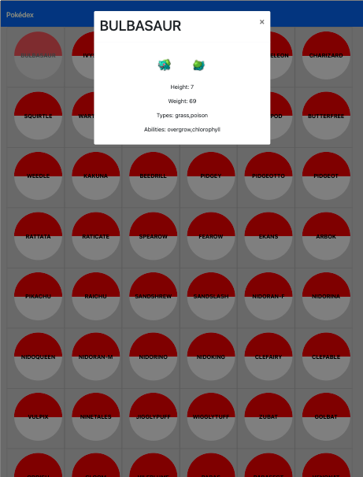
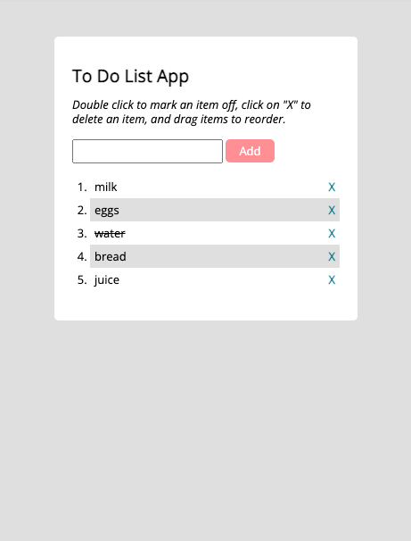
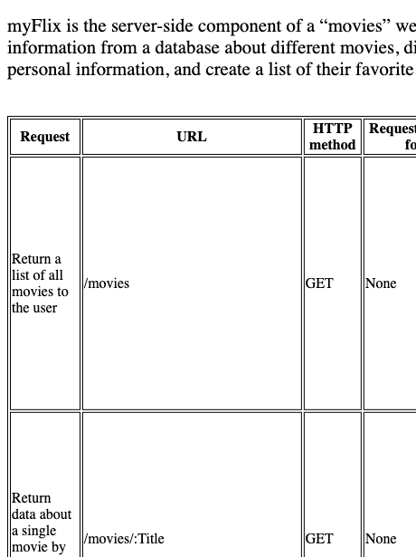
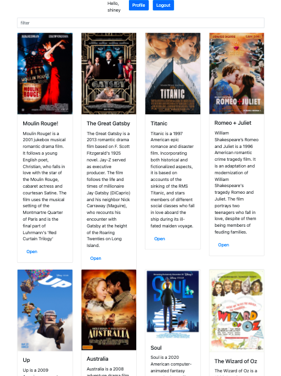
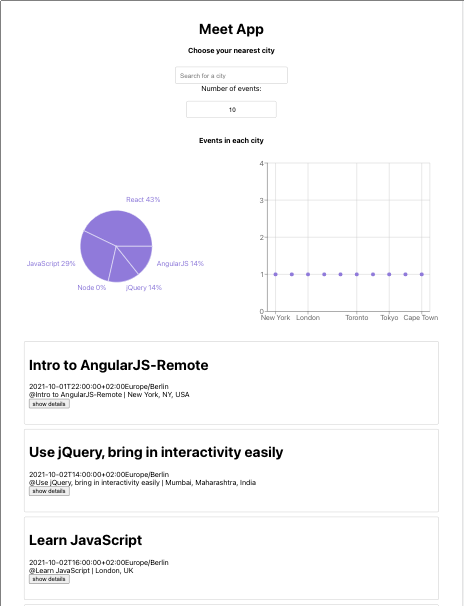
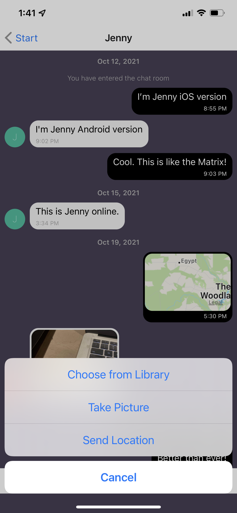
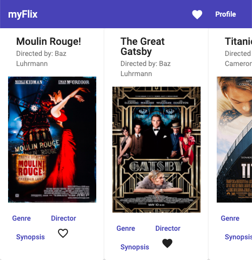

Work
Need Help on Your Project?
I can help realizing front-end and back-end projects with the following technologies: Java, JavaScript, HTML5, CSS3. I am also happy to learn other technologies if needed.
Contact meGet to know my work style and thought process in more detailed case studies.
Pokédex App
A small pokédex web application with HTML5 and CSS3 that loads pokémon names from an external API in a list format and enables the viewing of pokémon data points, includnig name, height, and image, in detail upon user clicking on a pokédex list button. Within this project, I was responsible for the frontend. It's written in JavaScript ES6.
To Do List App
A small to do list app built with jQuery JavaScript library that allows the user to add, cross-out, delete and change order of the to do items. Within this project, I was responsible for the frontend. It's written in vanilla JavaScript ES6 and jQuery.
Movie App
The server-side component of a “movies” web application, including the server, business logic, and business layers of the application, and interacts with a database that stores data. The web application will provide users with access to information about different movies, directors, and genres. Users will be able to sign up, update their personal information, and create a list of their favorite movies. The REST API will be accessed via commonly used HTTP methods like GET and POST. Similar methods (CRUD) will be used to retrieve data from your database and store that data in a non-relational way. Within this project, I was responsible for the backend. It's written in JavaScript ES6. Additionally, it uses Node.js, npm, Express, MongoDB, Mongoose, Heroku, Postman, and JSDoc.
MyFlix React Client
Using React, I built the client-side for an application called myFlix based on its existing server-side code (REST API and database). Within this project, I was responsible for the frontend and the backend. It's written in JavaScript ES6. Additionally, it uses React, React-Bootstrap, React Redux, Parcel, Netlify, and Postman.
Meet App
A serverless, progressive web application (PWA) that uses the Google Calendar API to fetch upcoming events. I was responsible for the frontend development. It's written in JavaScript ES6. Additionally, it uses User Stories to determine project requirements and story points, Test Scenarios and Gherkin, React, TDD methodologies such as unit testing and integration tessting, Jest, Enzyme, BDD methodologies such acceptance testing and end-to-end testing, Cucumber and Puppeteer, AWS Lambda, Attatus, and Recharts.
Chat App
I built a chat app for mobile devices using React Native. The app will provide users with a chat interface and options to share images and their location. Within this project, I was responsible for the frontend and the backend.It's written in JavaScript ES6. Additionally, it uses Node.js, Expo CLI, Firestore, Firebase, Gifted Chat library, and asyncStorage.
MyFlix Angular Client
Using Angular, I built the client-side for an application called myFlix based on its existing server-side code (REST API and database), with supporting documentation. Within this project, I was responsible for the frontend. It's written in TypeScript. Additionally, it uses User Stories to determine project requirements and story points, User Flows to represent the different paths that a user can take to complete a task on the website, Kanban board to match the amount of work currently in progress and team capacity, Angular Material, and TypeDoc.